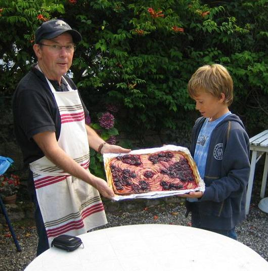
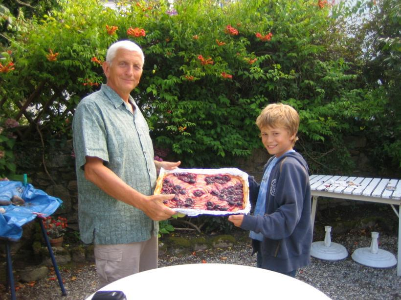

Recette
n°201 : Tarte "God save
the Quetsche"
Comme aime à dire
Julien Béclin quand il exécute une des recettes qui ont
fait sa renommée :
"Je suis jeune, il est vrai; mais
aux âmes bien nées,
La valeur n'attend pas le nombre des années."

Ingrédients
(pour 8 personnes)
- 6 grosses pommes plutôt tendres
- 1 kg de quetsches
- 8 cuillers à soupe bombées de sucre en poudre
- 2 pâtes à tarte brisée type Marie, pur beurre
Préparation :
- mettre le four à préchauffer à 220C
- dénoyauter les quetsches
- éplucher les pommes, les couper en lamelles, les mettre
dans une bassine d'eau froide pour ne point qu'elles s'oxydent
- sur la plaque du four, disposer du papier à cuisson en
couvrant bien tout le fond
- dérouler les pâtes à tarte et les mettre sur la
plaque du four
- au rouleau ou avec les pouces, souder les deux pâtes en les
étirant pour qu'elles couvrent tout le fond
- piquer la pâte à la fourchette pour éviter
qu’elle ne gonfle
- disposer pommes et prunes de façon à reconstituer le
drapeau de la Grande Bretagne
- saupoudrer du sucre
- enfourner à
four chaud et cuire 45 à 60 mn
Observations :
Recette exécutée à Quiberon le 2 août 2008
par Julien Béclin, avec l'aide de deux jeunes marmitons (Michel
Pioger et Jean-Pierre Bourdier) pour
les familles Béclin, Pioger et Bourdier.
Tout a été mangé !
